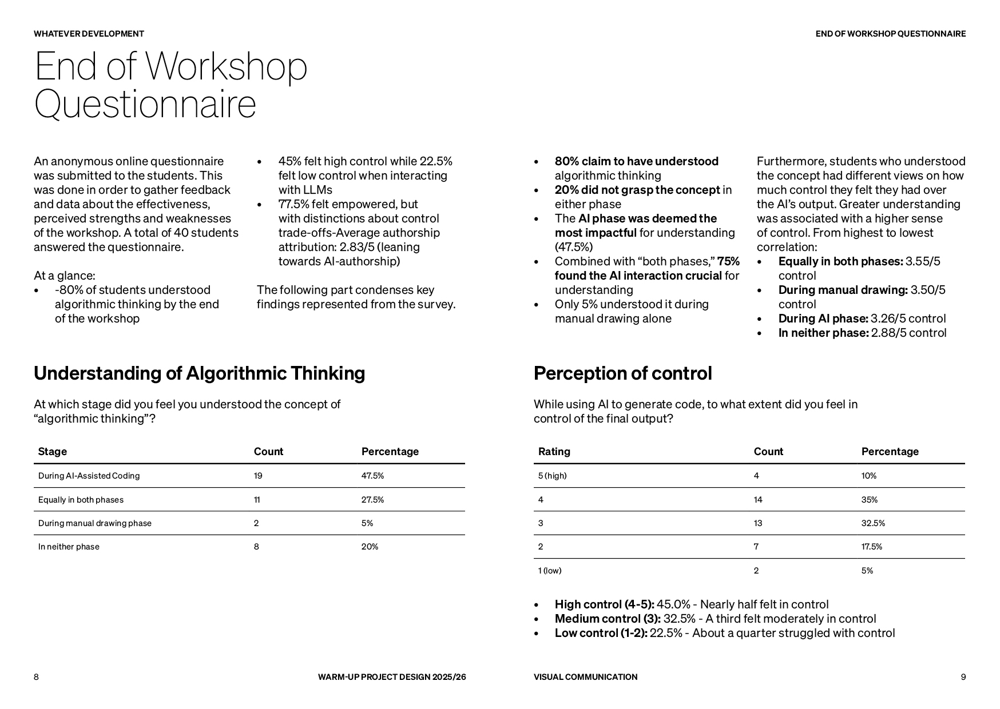
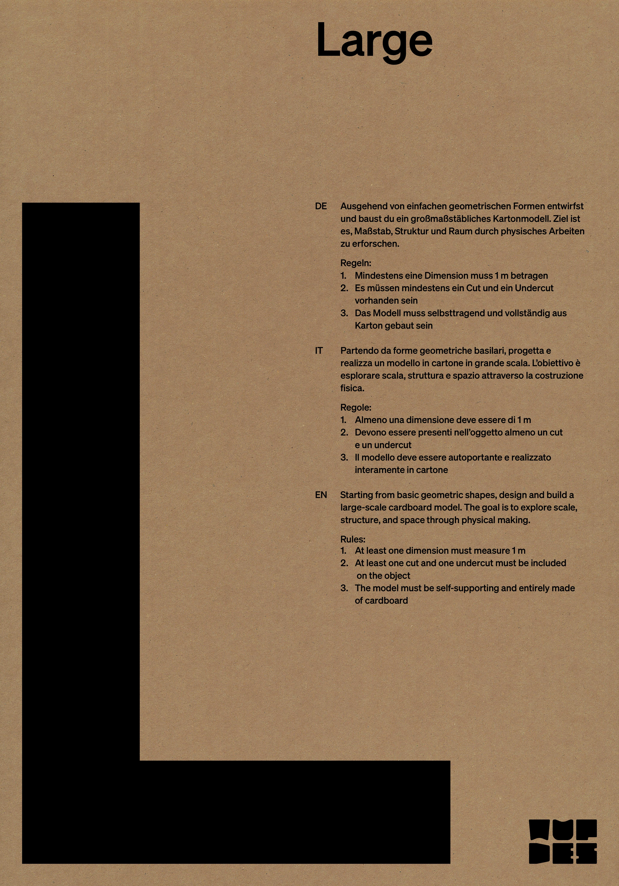
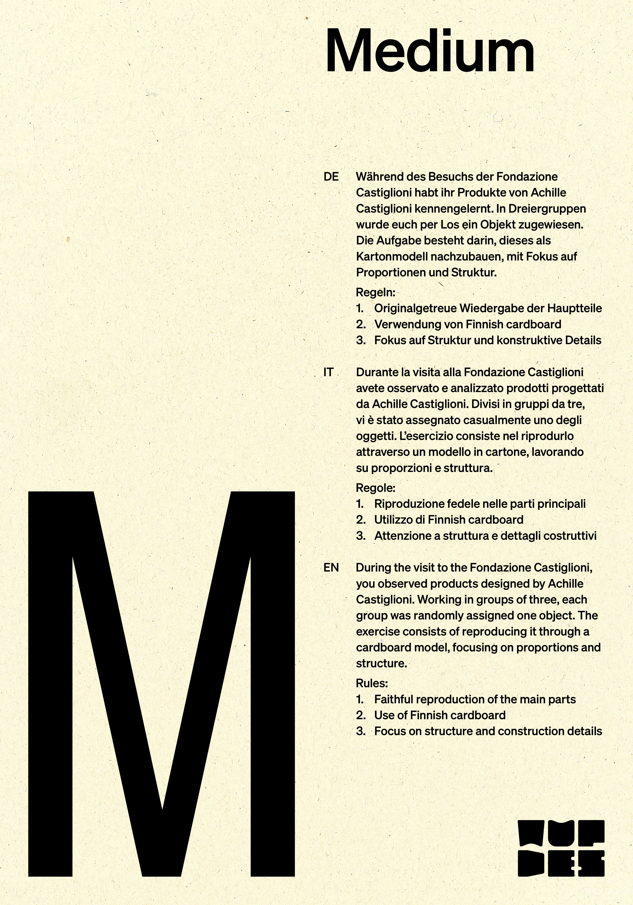
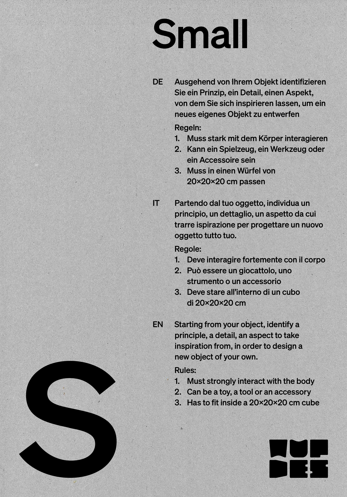
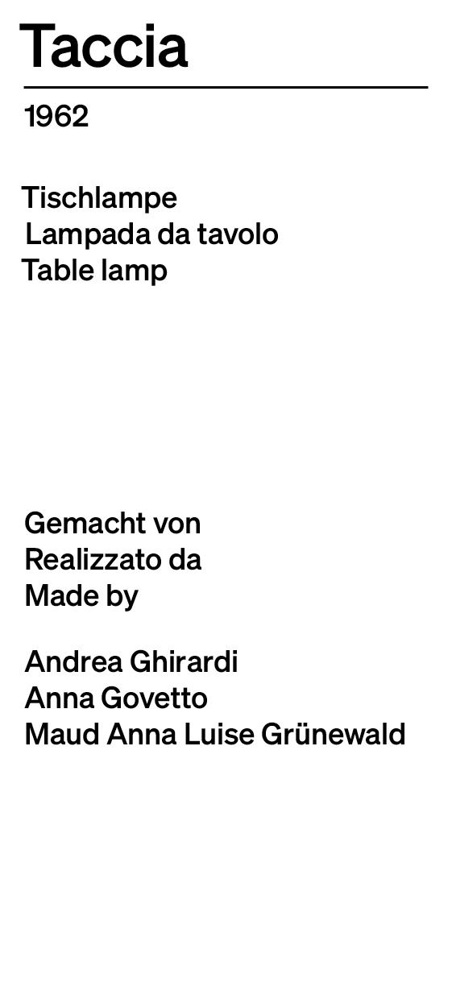
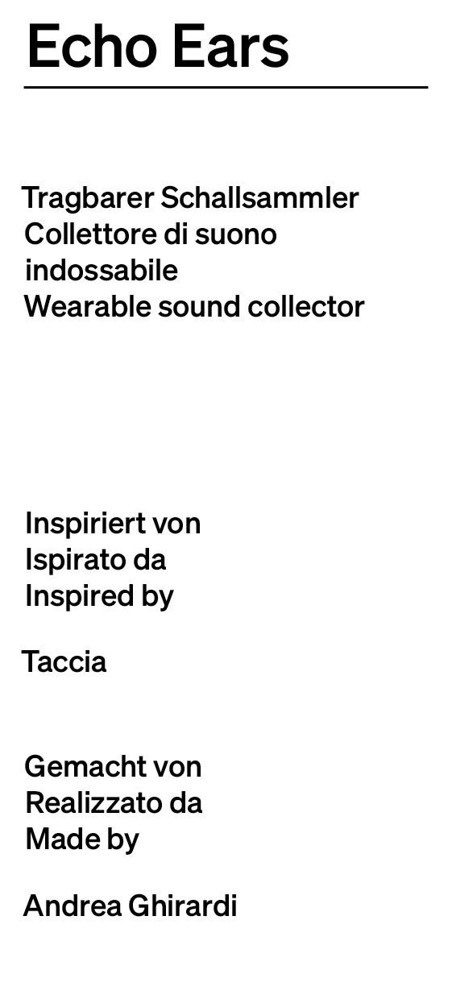
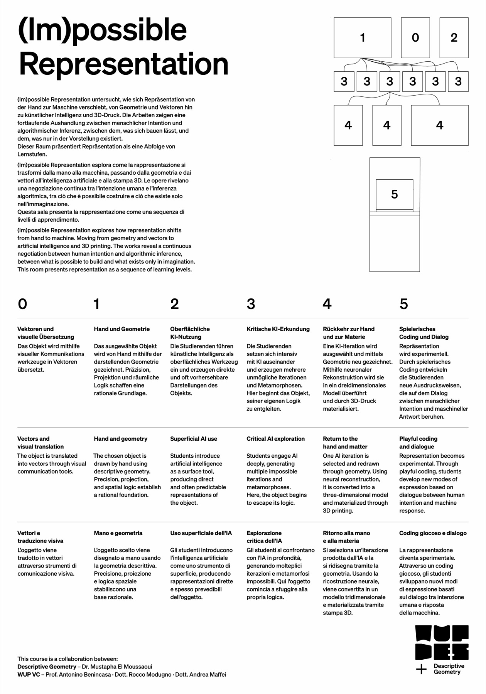

03 / 06
Visual Identity & Exhibition Design
Panoramica
GOG, Gäste Ospiti Guests, è la mostra di fine semestre della Facoltà di Design e Arti della Libera Università di Bolzano: l'università apre le porte al pubblico e gli studenti espongono il lavoro svolto lungo il semestre. Il WUP è il Warm-Up Project, il primo semestre del primo anno di Design. Ho contribuito alla visual identity complessiva del WUP con il sistema tipografico, i poster per la sezione Product Design, il booklet di WhateverDev(), l'infografica per la collaborazione con Geometria Descrittiva e le etichette per i modelli in cartone, un sistema data-driven generato a partire dai dati degli studenti.

Logo WUP, sistema modulare e geometrico
Approccio
Il sistema visivo del WUP nasce da una domanda semplice: come rendere riconoscibile un progetto collettivo senza soffocarne la diversità? Il logo, costruito su moduli geometrici sovrapposti che richiamano la pixel art e la griglia cartesiana, diventa il filo conduttore di tutti i materiali espositivi.
Il sistema tipografico si costruisce su un contrasto preciso: un sans-serif geometrico compresso per i titoli, leggibile a distanza e su supporti fisici; un corpo testo in famiglia compatibile per le didascalie e i testi di sala. La scelta esclude qualsiasi decorazione: il peso dell'esposizione lo portano i lavori degli studenti, non il sistema visivo.



Poster Large, Medium, Small, tre grammature di cartone


Etichette modelli Medium e Small, Sistema data-driven
Approccio
I tre poster corrispondono ai tre esercizi del corso: Large, Medium, Small. Il formato si riduce da esercizio a esercizio, non come convenzione, ma come citazione della filosofia che guida il corso: scala, proporzione, riduzione progressiva. Ogni poster è stampato sul cartone utilizzato per costruire i modelli: kraft grezzo per Large, Finnish cardboard per Medium, cartone grigio riciclato per Small. Il materiale del progetto diventa il supporto del poster.
Le etichette per i modelli sono state generate con un sistema data-driven: partendo da un file CSV con tutti i dati degli studenti e degli oggetti, uno script ha popolato automaticamente le variabili tipografiche di ciascuna etichetta, nome dell'oggetto, anno, descrizione trilingue, nomi degli studenti, eliminando la gestione manuale di centinaia di varianti e riducendo a zero il margine di errore.
Allestimento della stanza WhateverDev(), Virginia Dobos
whateverDev(), copertina del booklet di visual identity del progetto

Estratto del booklet
Approccio
Il booklet raccoglie e documenta l'intero percorso del workshop WhateverDev(): i prompt, i disegni procedurali degli studenti e gli output dei quattro tool sviluppati in p5.js. La copertina è stata realizzata con uno script che combinava casualmente i disegni fatti a mano, tutti scansionati, per generare nuove composizioni: un atto generativo anche nella fase di design.
In occasione del GOG ho distribuito il booklet ai visitatori come guida al progetto: il passaggio dal disegno procedurale analogico al vibe coding, i quattro tool, e i dati raccolti da Rocco Lorenzo Modugno e Andrea Maffei sul senso di controllo degli studenti e sull'authorship nei progetti generati con l'AI.
La stanza (Im)possible Representation al GOG

(Im)possible Representation, infografica e targhette degli oggetti
Poster e banner, Samuele Mogno
Approccio
La collaborazione tra il gruppo di Visual Communication e il corso di Geometria Descrittiva ha prodotto una mostra dedicata al tema della rappresentazione: come cambia il disegno quando passa dalla mano alla macchina, dalla geometria all'intelligenza artificiale, fino alla stampa 3D. Il percorso si articola in sei livelli, da Vettori e Traduzione Visiva al Playful Coding, che tracciano una progressione dall'analogico al generativo.
Ho progettato l'infografica all'entrata della stanza, un diagramma dei sei livelli espositivi che orienta il visitatore nel percorso didattico, e le targhette per ogni studente esposto, identificando l'oggetto, l'anno, e i componenti del gruppo di lavoro. Anche qui il sistema è data-driven: un file di dati, uno script, zero errori manuali.
Università
Libera Università di Bolzano
Corsi
WUP - Visual Communication
& Product Design
Descriptive Geometry
Gruppo
Andrea Ghirardi
Virginia Dobos
Samuele Mogno
Emanuel Kohlschitter
Sonja Tessaro
Franziska Fischer
Elias Bschorr
Carmen Anthea Alcaraz Bracho
Facilitatori e Docenti WUP - Visual Communication
Antonino Benincasa
Rocco Lorenzo Modugno
Andrea Maffei
Docenti WUP - Product Design
Alessandro Mason
Camilo Ayala Garcia
Stefania Rigoni
Amedeo Bonini
Docente Descriptive Geometry
Mustapha El Moussaoui
Fotografia
Andrea Maffei
Anno
2025